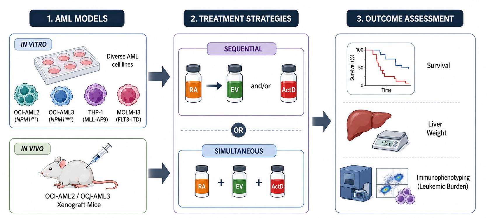
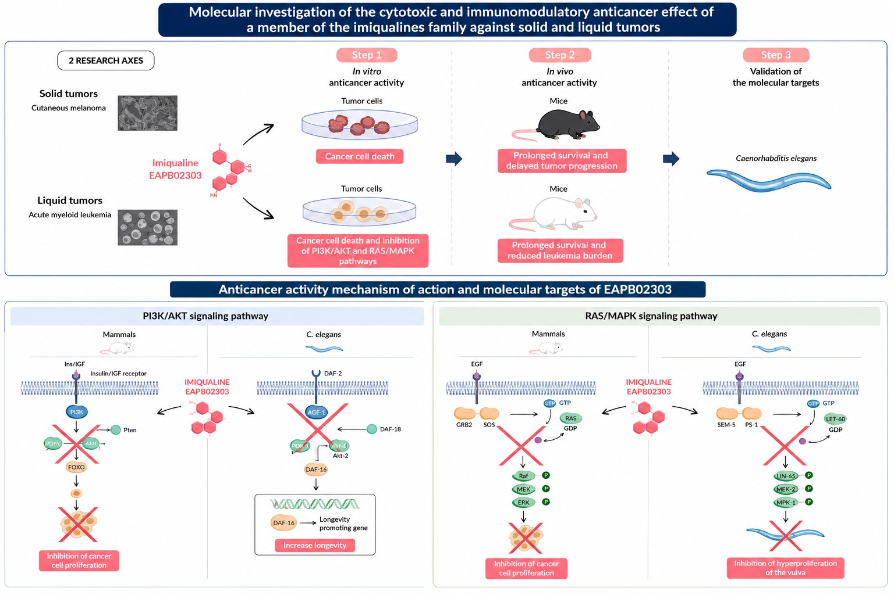

Projects
Research
Master's, doctoral and postdoctoral projects, in order.
Click any figure to enlarge it.
Master of Science · 2019-2021
Targeted therapy for acute myeloid leukemia: retinoic acid, actinomycin D and everolimus

During my Master's research, I worked on acute myeloid leukemia, exploring the combination of targeted therapies on cancer cell lines and xenograft murine models. This project ignited my interest in cancer therapeutics and translational medicine. My Master's thesis laid the foundation for my research career and sparked my enduring interest in cancer biology.
Acute Myeloid Leukemia (AML) is a heterogeneous malignancy of myeloid origin and one of the most common adult leukemias. Despite all therapeutic advances, AML still associates with poor prognosis, high relapse rates, and resistance to chemotherapy. Personalized medicine based on predicted response or risk of disease, is gaining major interest in AML management. This includes targeted therapies of specific mutations or disrupted pathways in AML. Everolimus (EV), an mTOR inhibitor, improved the treatment of AML patients when combined with other therapeutic agents. Actinomycin D (ActD), an anti-tumor antibiotic, inhibited AML cell growth in vitro, yet presents an unambiguous clinical efficacy in some relapsed/refractory AMLs. Retinoic acid (RA), a hormone playing a major role in differentiation, proved beneficial, alone or combined to other agents on some subtypes of AML.
In this study, we explored the effect of simultaneous administration of RA, EV, ActD or the sequential administration of RA first, followed by EV and/or ActD on AML. In vitro, we used OCI-AML2, OCI-AML3, THP-1 and MOLM-13, presenting different mutations and reflecting some heterogeneous groups of AML. In vivo, xenograft mice were injected with OCI-AML2 or OCI-AML3 and treated with either RA followed by EV and/or ActD, or simultaneously with RA/Act/EV. Mice were monitored for survival, or humanely sacrificed 2 weeks post-treatment. Liver weight was recorded, and leukemic burden was assessed by immunophenotyping.
We demonstrated that OCI-AML2, OCI-AML3, and MOLM-13 are sensitive to ActD alone or to EV/ActD combination and RA addition to these treatments did not confer any additional advantage in OCI-AML2 and OCI-AML3. THP-1 cells lacking p53, were less sensitive to ActD alone, yet the addition of EV to ActD resulted in a more pronounced cell death. This phenotype remained less prominent than that observed in cells with intact p53. Adding RA to EV demonstrated some beneficial effect in all tested cells, but this effect was not as prominent as ActD or EV/ActD. Accordingly, we restricted our molecular analysis to EV/ActD. We revealed a p53-dependent apoptosis in OCI-AML2 and OCI-AML3, 48h post-treatment. Similar to in vitro results, sequential treatment with RA first, followed by EV/ActD did not yield any beneficial in vivo antitumor effect. Indeed, mice presented with sustained hepatomegaly and even more exacerbated tumor burden in bone marrow for some conditions. However, our preliminary results showed that EV single agent, or EV/RA/ActD for 5 days following initial administration of RA prolonged survival of OCI-AML3 xenografted mice, while EV and ActD single agents, and RA prior to EV/ActD prolonged survival of OCI-AML2 mice.
In conclusion, our preliminary study demonstrated that an initial treatment with RA before EV and/or ActD may not confer significant benefit and may depend on the AML subtype, but these results require future confirmation.
Doctoral thesis · 2021-2024
Molecular investigation of the cytotoxic and immunomodulatory anticancer effect of a member of the imiqualines family against solid and liquid tumors

My PhD research involved cytotoxicity analysis, metabolism studies, mechanistic insights, and in vivo studies of patented imiqualine derivatives, analogs of the TLR7 agonist imiquimod, for the treatment of AML and cutaneous melanoma. My results showed that the imiqualine EAPB02303 is effective against AML and cutaneous melanoma cell lines, and that its mechanism of action involves oncoprotein degradation and protein kinase inhibition (Makhoul et al., Biomolecules 2025). My PhD also allowed me to bridge the gap between laboratory findings and physiologically relevant model organisms, by validating the mechanism of action of EAPB02303 in the alternative model organism Caenorhabditis elegans (Makhoul et al., IJMS 2024).
Acute myeloid leukemia (AML) is a hematological malignancy characterized by an uncontrolled growth of undifferentiated myeloid progenitors. Major advances in genomic sequencing enhanced our understanding of the heterogenous genetic landscape underlying the complex pathobiology of AML. The PI3K/AKT/mTOR and the RAS/MAPK pathways are constitutively active in most AML cases. This hyperactivation is associated with unfavorable prognosis and poor survival. Most AML patients respond well to standard treatments, yet they eventually relapse, develop chemoresistance, and do not survive for more than 5 years. This urges for the development of new therapeutic approaches to improve the prognosis and survival of AML patients.
The family of imiqualines regroups patented analogs of the immunomodulatory drug Imiquimod and exhibits potent pre-clinical activities on a wide range of cancer cells. Subsequent chemical modifications yielded the second generation imiqualines, of which the lead molecule EAPB02303 and a molecule A. Here, we showed that EAPB02303 inhibits the in vitro growth of AML cell lines and the ex vivo growth of blasts from AML patients exhibiting different molecular profiles. EAPB02303 induced significant cell cycle arrest, with an accumulation in the pre-G0 state, while molecule A induced a G2/M arrest. Both members of imiqualines increased the expression of P53, its phosphorylated active form P-P53, its downstream effector P21, and induced apoptosis with PARP and caspase cleavage. AML cell lines expressing NPM1c, one of the most frequent mutated proteins encountered in 30% of AML patients, were more sensitive to EAPB02303 or molecule A, with a notable degradation of NPM1c. At the molecular level, EAPB02303 or molecule A potently downregulated components from the PI3K/AKT/mTOR and the RAS/MAPK signaling pathways in treated AML cell lines. In vivo, EAPB02303 or molecule A significantly reduced leukemic burden in the bone marrow of NPM1c and wild type NPM1 (wt-NPM1) AML xenograft mice, and reduced AML-associated hepatomegaly in all treated animals. Yet, prolonged survival was only obtained in NPM1c AML xenografts following treatment with EAPB02303, whilst the molecule A significantly enhanced the survival of both NPM1c and wt-NPM1 AML xenografts.
We then explored the antineoplastic effect of EAPB02303 against solid tumors. Our preliminary results showed a robust inhibition of the proliferation of melanoma cell lines in vitro upon treatment with EAPB02303. Promising in vivo results were also obtained, warranting additional future investigations.
Finally, we validated the mechanism of action of EAPB02303 in the model organism Caenorhabditis elegans. We showed significant prolonged longevity of wild type strains and the activation of the transcription factor DAF-16/FOXO, a downstream effector of the PI3K/AKT pathway. Furthermore, treatment with EAPB02303 significantly decreased the hyperactivated RAS-associated phenotype in mutant strains with RAS gain of function mutation. Altogether, these results demonstrate that EAPB02303 acts through the downregulation of the activity of PI3K/AKT and RAS/MAPK pathways.
Collectively, our study provides promising therapeutic interventions of two novel second generation imiqualines against solid and liquid tumors. By unveiling their molecular mechanism of action in different, yet complementary models, our results widen the scope of imiqualine-based anticancer treatments against different subtypes of AML and cutaneous melanoma.
Postdoctoral · Project 1
Enzymatic Bioactivation of EAPB02303 by COMT yields EAPB04303
My postdoctoral research focused on comprehensive transcriptomic characterization and validation of the molecular targets of novel imiqualines. In this first project, we explored and confirmed the metabolism of EAPB02303 into the active metabolite EAPB04303, protected by a patent on which I am a co-inventor, which demonstrated curative effects in AML xenografts and patient-derived xenografts. We then identified its mode of action through RNA sequencing and bioinformatics analyses coupled with on-bench confirmation, showing that EAPB04303 causes mitochondrial alterations in NPM1-mutant AML cells.
Graphical abstract and full abstract available once the work is published.
Postdoctoral · Project 2
Comprehensive transcriptomic and molecular characterization of the Imiqualine metabolite EAPB04303
In the second project, we identified and validated a treatment-induced immune-stimulatory response driven by TLR activation and cytokine release, together with nucleolar and ribosomal perturbations, giving a mechanistic account of why NPM1-mutated AML is selectively sensitive to EAPB04303, and positioning the compound as an immunomodulatory therapeutic strategy for this genetically defined subtype.
Graphical abstract and full abstract available once the work is published.